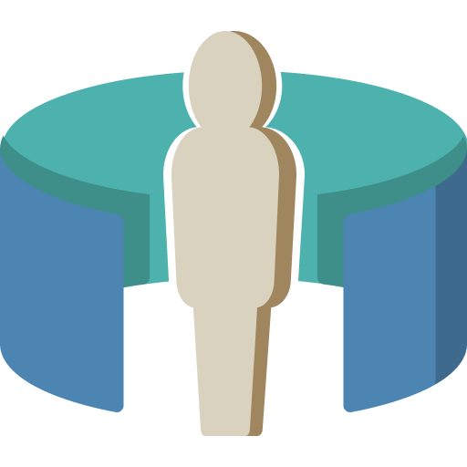

Virtual Production Indie Film Guide
GitHub
YouTube
Twitter

About
Changelog
Contributing
Overview
Contributing Guidelines
Adding Workflows
Adding Guides
Adding Help
Referencing Content
Embedding Content
Work in Progress
Experimental
Licenses
Roadmap
Framework
4K
ACES
Color Correction
Color Pipeline
Live
Multicam
nDisplay
RAW
Timecode
Production Checklist
Workflows
BURN Workflow
Overview
Guides
Pre-Production
Unreal Set Design
Setting Up Timecode with BMPCC4k
BMPCC4k to BRaw
Overview
Settings
BRaw to Davinci Resolve
Production
OCIO Setup in Unreal
Adjusting for Lens Distortion
Unreal Composure
Recording with Take Recorder
Post-Production
Unreal to Nuke
Unreal to Resolve
Adding DoF to Unreal Renders in Nuke
Nuke to Resolve
Resolve to Nuke
LIVE Workflow
Comparison
Add Your Own
Guides
BMPCC4k to BRaw
Overview
Settings
BRaw to Davinci Resolve
Adjusting for Lens Distortion
Adding DoF to Unreal Renders in Nuke
Nuke to Resolve
Recording with Take Recorder
Resolve to Nuke
Setting Up Timecode with BMPCC4k
OCIO Setup in Unreal
Unreal Composure
Unreal Set Design
Unreal to Nuke
Unreal to Resolve
Studios
Ben’s Home Studio
Equipment
Hardware
Filming
Green Screen
Computer Setup
Software
Jake’s Home Studio
Workflows
Equipment
Hardware
Filming
Computer
Software
Add Your Studio
Help
Dead Pixel on BMPCC
References
Content
Software
Hardware
Code of Conduct
Our Pledge
Our Standards
Enforcement Responsibilities
Scope
Enforcement
Enforcement Guidelines
1. Correction
2. Warning
3. Temporary Ban
4. Permanent Ban
Attribution
License
Creative Commons Attribution-NonCommercial-NoDerivatives 4.0 International Public License
Section 1 – Definitions.
Section 2 – Scope.
Section 3 – License Conditions.
Section 4 – Sui Generis Database Rights.
Section 5 – Disclaimer of Warranties and Limitation of Liability.
Section 6 – Term and Termination.
Section 7 – Other Terms and Conditions.
Section 8 – Interpretation.
Contributor License Agreement
tl;dr
Unowned
Edit this page
Metadata
Unreal to Resolve
¶
Planned
This content is
Planned
. Please see our
Roadmap
for more info.
Unreal to Nuke
Adding DoF to Unreal Renders in Nuke